Generates plots for mlr3::PredictionClassif, depending on argument type:
"stacked"(default): Stacked barplot of true and estimated class labels."roc": ROC curve (1 - specificity on x, sensitivity on y). Requires package precrec."prc": Precision recall curve. Requires package precrec."threshold": Systematically varies the threshold of the mlr3::PredictionClassif object and plots the resulting performance as returned bymeasure.
# S3 method for PredictionClassif
autoplot(object, type = "stacked", measure = NULL, ...)Arguments
- object
- type
(character(1)):
Type of the plot. See description.- measure
(mlr3::Measure)
Performance measure to use.- ...
(
any): Additional arguments, passed down to the respectivegeomor plotting function.
Value
ggplot2::ggplot() object.
References
Saito T, Rehmsmeier M (2017). “Precrec: fast and accurate precision-recall and ROC curve calculations in R.” Bioinformatics, 33(1), 145-147. doi: 10.1093/bioinformatics/btw570 .
Examples
library(mlr3)
library(mlr3viz)
task = tsk("spam")
learner = lrn("classif.rpart", predict_type = "prob")
object = learner$train(task)$predict(task)
head(fortify(object))
#> row_ids truth response prob.spam prob.nonspam
#> 1: 1 spam spam 0.8513514 0.14864865
#> 2: 2 spam spam 0.9339623 0.06603774
#> 3: 3 spam spam 0.9339623 0.06603774
#> 4: 4 spam spam 0.9090909 0.09090909
#> 5: 5 spam spam 0.9090909 0.09090909
#> 6: 6 spam nonspam 0.1004750 0.89952503
autoplot(object)

autoplot(object, type = "roc")
 autoplot(object, type = "prc")
autoplot(object, type = "prc")